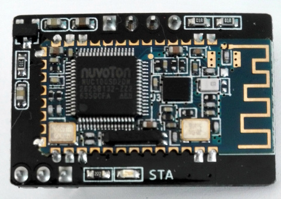
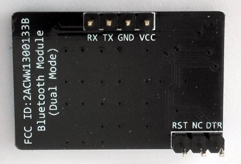
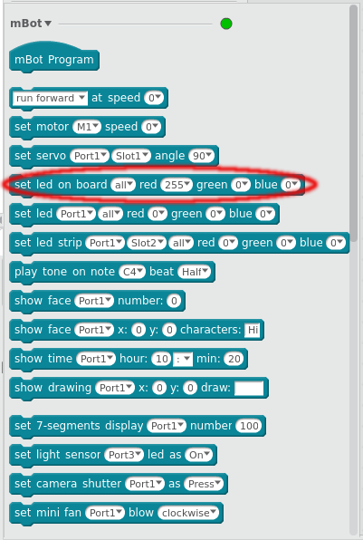
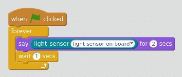
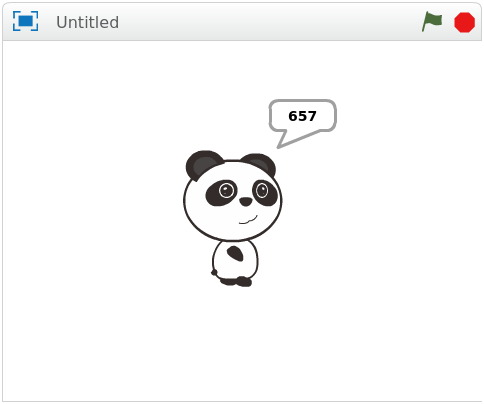
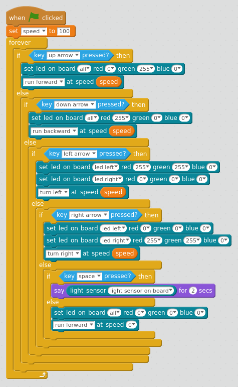
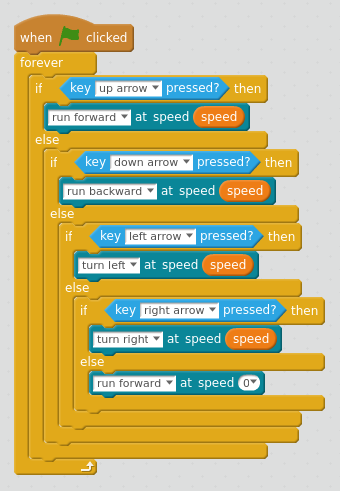
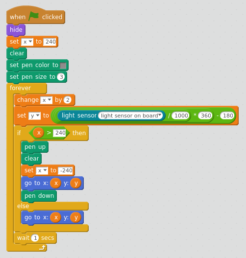
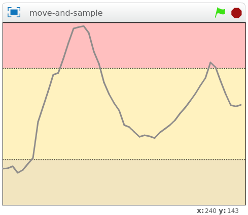

risorse | controllo di mbot da mblock
Tutte le precedenti esperienze con mBot (cfr. studio del firmware di mBot, analisi del moto di mBot, aggiramento di ostacoli con mBot e parcheggio automatico con mBot) sono state condotte in modalità “Arduino”, ovvero caricando il programma direttamente sul robot con il comando «Upload to Arduino». Questo modo di lavorare, che ha l'indubbio vantaggio di produrre alla fine un robot completamente autonomo, rende tuttavia lo sviluppo piuttosto disagevole sotto due punti di vista: innanzitutto richiede che mBot sia connesso fisicamente al computer tramite il cavo USB, in secondo luogo i tempi di compilazione e caricamento del prorgramma non sono trascurabili. Ho sviluppato allora un nuovo piccolo progetto per sperimentare la programmazione di mBot direttamente dall'ambiente mBlock.
La versione 4.0 di mBlock non funziona correttamente su Ubuntu 16.04: le letture dei sensori ritornano invariabilmente zero. Il problema non si presenta sulla versione 4.0.4, che è però caratterizzata da un'interfaccia completamente rinnovata — cosa che potrebbe disorientare , considerato che la guida ufficiale fa riferimento a quella vecchia. Anche la versione 3.4.11 di mBlock su Windows 7 è immune da questo problema.
Per poter controllare mBot dall'ambiente mBlock è necessario prima caricare il firmware apposito. Dopo aver collegato mBot ad una presa USB del computer con il cavo in dotazione, si procede come segue:
(*) il menu «Connect» cambia in «Connected» e si colora di verde

Il menu «Connect» prima della connessione
Il menu «Connected» a connessione avvenuta
Una volta che il firmware è stato trasferito con successo è possibile scollegare mBot dal computer. Prima di stabilire la connessione bluetooth conviene spegnere e riaccendere il robot. Procedere quindi come segue:
(*) l'indirizzo del dispositivo è diverso per ogni mBot
Selezione del dispositivo bluetooth con mBlock 4.0.4
L'indirizzo bluetooth di norma è riportato sul modulo hardware; non nel mio caso, però:
Il lato componenti del modulo bluetooth non riporta alcun indirizzo
Sul lato connettori è visibile solo l'identificativo FCC
Poco male, comunque: avendo un solo robot e nessun altro apparato bluetooth nei paraggi, l'unico dispositivo individuato da mBlock non può che essere il mio mBot.
Per accertarsi che la connessione bluetooth è attiva e funzionante basta innescare uno qualunque dei blocchi di controllo degli attuatori di mBot e verificarne l'effetto. È per esempio possibile accendere i led sul rosso a bordo del robot impostando il livello «red» del comando «set led on board …» a 255 e facendo un doppio click direttamente sul blocco:
Un doppio click sul blocco evidenziato deve causare l'accensione dei led
Prove analoghe si possono fare attivando i motori con il blocco «set motor …» o il buzzer con il blocco «play tone on note …». Verificare il corretto funzionamento dei sensori richiede un piccolo sforzo in più, serve infatti preparare un breve programma come questo:
Il programma che verifica la lettura del sensore luminoso
Il programma interroga il sensore luminoso ogni 3 secondi e mostra la lettura in un fumetto:
Il programma in esecuzione
Uno dei primi esercizi di programmazione che viene proposto ai CoderDojo è quello di far muovere uno sprite in Scratch utilizzando i tasti cursore del computer. Per dare un senso di concretezza al progetto si può pensare di voler di realizzare un “rover” il cui movimento è controllato con i tasti direzionali mentre la barra spaziatrice comanda l'acquisizione del livello di luminosità del punto in cui si trova il robot:
Il programma del rover (qui il progetto mBlock)
Il programma sfrutta i led per indicare lo stato del robot: verde per l'avanzamento, giallo per le sterzate, rosso per la retromarcia. Durante l'acquisizione vengono tuttavia spenti: trovandosi molto vicini al sensore di luminosità se accesi potrebbero alterarne le misure.
In questo secondo esperimento la modalità di acquisizione cambia da manuale ad automatica. Il rover quindi rileva il dato sull'intensità luminosa ad intervalli regolari mentre mBlock ne traccia l'andamento su un grafico:
La parte di programma che si occupa del movimento
Il sotto-programma che sovrintende il movimento è una versione ridotta del progetto precedente, dal quale sono state eliminate le istruzioni relative all'acquisizione manuale e all'accensione dei led: considerando che la lettura del sensore ora avviene senza soluzione di continuità, è bene che essi rimangano spenti.
La parte di programma che traccia l'andamento dell'intensità luminosa (qui il progetto mBlock)
Due le particolarità del programma degne di nota: la prima è che la traccia viene cancellata automaticamente quando raggiunge il margine destro per ricominciare da capo a sinistra (cfr. blocco «if x > 240 …»); in secondo luogo, la scalatura del valore acquisito. Il valore letto dal sensore è un numero intero compreso tra 0 e 1000; per riportarlo adeguatamente sul grafico esso va rimappato nell'intervallo ±180, che corrisponde all'estensione dell'asse verticale (cfr. blocco «set y to …»).
Il grafico realizzato durante una “passeggiata” in cui è stata attraversata una zona d'ombra
Fino ad oggi ho sviluppato i programmi di mBot secondo la procedura:
Questo nuovo approccio si è dimostrato molto più agevole, perché non richiede il caricamento del programma in mBot. Le modifiche apportate possono essere validate immediatamente grazie al fatto che è mBlock che si occupa di inviare a mBot le istruzioni che di volta in volta il robot è chiamato ad eseguire. L'unico svantaggio che ho potuto registrare è il fatto che il robot non è così reattivo come quando ospita il programma vero e proprio e non ha un firmware dedicato che fa da interprete dei comandi ricevuti da mBlocks. La scelta ottimale potrebbe essere quella di sviluppare il programma in mBlocks e trasferirlo su mBot una volta raggiunta la sua veste definitiva.
Scaricare il pacchetto «deb» dalla pagina dei download del sito ufficiale (link diretto al pacchetto). Per installare il pacchetto aprire un terminale e dare il comando:
sudo dpkg -i path-to-the-deb-file
Nel caso l'installazione fallisca a causa dell'assenza di qualche dipendenza, rilanciare il comando con il flag -f, come spiegato qui:
If dpkg reports an error due to dependency problems, you can run sudo apt-get install -f to download the missing dependencies and configure everything.
Per disinstallare l'applicazione, sempre da terminale dare il comando:
sudo dpkg -r mBlock
Pagina modificata il 27/05/2018